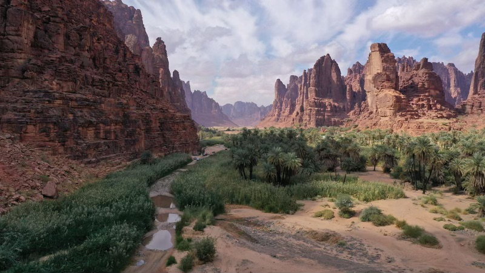

Wadi Al Disah
Places you should visit in Wadi Al Disah :

Is one of the tourist attractions in Tabuk , you can enjoy the nature there also you can do some of the activity that will add some entertainment to your trip like:
hiking
ATVS
And a lot of other activities
If you want see more!